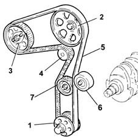

Introduction - TIMING SYSTEM
- Path
- Descriptions > 10 ENGINE > 1032 TIMING SYSTEM > Introduction - TIMING SYSTEM
- Kind
- system description
- Applies to
- all engines; all production periods
- Interactive page
- https://sloeber94.github.io/elrnDB-fDbl/en/#/2585397
Applies to: all engines; all production periods
The timing system is the collection of components which control the opening and the closing of the inlet and exhaust valves allowing the flow of air and burnt gases.
These components are operated by the crankshaft and the movement is transmitted via a toothed belt to the camshafts which, in turn, act on the valves.
The various components should be perfectly synchronized (TIMED), if this is not the case, the upper part of the piston will interfere with the valves.

1, Engine pulley 2, Camshaft pulley 3, Injection pump pulley 4, Water pump pulley 5, Power drive toothed belt 6, Banging prevention bearing 7, Pulley tensioner
Applies to: all engines; all production periods
Since in 4 stroke engines the working cycle takes place during two revolutions of the crankshaft, whilst the valves have to open only once during the cycle, the camshaft only has to rotate once; therefore, the toothed pulley fitted on the camshaft will have twice the number of teeth as the pulley fitted on the crankshaft. therefore, the toothed pulley fitted on the camshaft will have twice the number of teeth as the pulley fitted on the crankshaft.